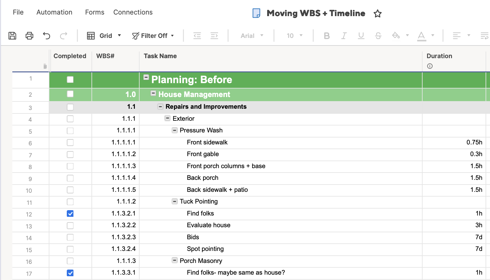

Program Reflection
Context
I graduated from the "Electronic Campus," more commonly known as Northwest Missouri State University. NWMSU became the first public university to put networked computers in every dorm room and faculty office, and was far ahead of its time. My love of technology began in undergrad at Maryville; it sparked a passion that grew throughout my teaching career and ultimately drew me to the IS_LT program.
Course Impact & Significant Learnings
Courses like Instructional Systems Design, Project Management, and Teaching Online Courses transformed my understanding of educational technology within the IS_LT program. I developed skills to analyze what needs to be learned and by whom, optimal ways to structure that learning, and how to facilitate the learners—especially in an online environment. Project Management particularly enhanced my ability to break complex initiatives into actionable steps—expertise that has benefited me personally, professionally, and academically. My perspective evolved from seeing technology as an administrative tool to understanding it as a fundamental component of effective learning design, equipping me with a robust skillset that benefits me, my employers, and my academic success.
My coursework systematically developed technical and analytical competencies that directly translate to professional practice. Through IS_LT 7384 Designing Games for Learning, I evolved from having "no idea how much thought went into creating a game for educational purposes" to mastering Construct 3 and understanding how to integrate learners' needs with platform strengths. Whether designing educational games for new employee training or creating social media content that doubles as "job aid" for customers, this degree taught me that effective instructional design requires matching learning objectives to the technological capabilities of available tools.
🔎 View Artifact Full-SizeI gained complex initiative management skills with personal and professional application. Project management skills gained through IS_LT 9473 fundamentally changed how I approach complex educational initiatives, providing analytical frameworks for needs assessment, resource allocation, and risk management that I immediately applied to both personal and professional contexts. I am currently planning a move and coordinating the entire project myself; I started with sticky notes of what needs to happen, which became the headings for my WBS. I'm currently building it out into a Gantt chart, which has been incredibly helpful.
 🔎 View Artifact Full-SizeMy coursework fostered an evolution of design thinking and analytical approach from my first class to my last. My digital media work in IS_LT 7361 highlighted the critical gap between good intentions and accessible implementation, teaching me that universal design principles must be prioritized from project inception rather than retrofitted afterward. This evolution is visible in comparing my first website project to my final one—the improvement in design sophistication and accessibility implementation demonstrates how these analytical skills developed over time.
 🔎 View Artifact Full-Size
🔎 View Artifact Full-Size
All these competencies work synergistically: game design requires project management methodology, while accessibility needs inform both media production and educational technology selection. The analytical thinking skills developed across my coursework sharpened my approach to instructional design challenges from my first class to my last. This integrated skillset represents a strong culmination of my understanding: technology is the strategic foundation through which I design, manage, and deliver effective learning experiences.
Impact & Professional Growth
My career aspirations center on leveraging learning technologies to create flexible, learner-centered educational experiences outside traditional institutional frameworks. Rather than pursuing conventional roles in corporate training or K-12 systems, my program experiences shaped my vision toward innovative delivery models that meet learners where they are. I'm particularly drawn to remote learning systems development, where my understanding of project management and user experience design can support global educational initiatives—potentially from international locations that offer new perspectives on cross-cultural learning design.
My entrepreneurial interests include scaling the Happy Campers curriculum I originally developed when my children were small into a comprehensive online platform, applying the systematic instructional design principles and multimedia creation skills gained through coursework to create sustainable, scalable learning experiences. Additionally, I'm passionate about community-based digital literacy education, offering personalized technology training in intimate, non-intimidating environments. This approach mirrors my successful Apple training background while incorporating universal design principles to serve underrepresented populations. I particularly appreciate how my IS_LT coursework provided me with the flexibility to approach the job market with diverse options rather than limiting me to traditional career trajectories.
My commitment to continued professional growth focuses on developing the entrepreneurial and technical skills necessary to implement my vision for innovative learning experiences. As I consider scaling my Happy Campers curriculum into a comprehensive e-commerce platform, I recognize the need to strengthen my understanding of online business management. This includes developing skills in e-commerce site development, SEO optimization, and intermediate project management tools that bridge the gap between basic platforms like Asana and enterprise solutions like SmartSheets.
I'm particularly interested in exploring AI integration for educational applications—both as a tool for creating personalized learning experiences and as customer service solutions for my potential e-commerce ventures. However, this interest comes with a commitment to understanding the ethical implications of AI in education, ensuring that technology serves learners rather than replacing human connection. Resources like the Knowledge Project podcast already inform my thinking about leadership and strategic business development, while professional organizations such as the Association for Educational Communications and Technology (AECT) and the Learning Guild will help me stay current with emerging trends in learning technologies. This multifaceted approach to professional development reflects my understanding that successful educational entrepreneurship requires both technical competency and ethical leadership in a rapidly evolving field.